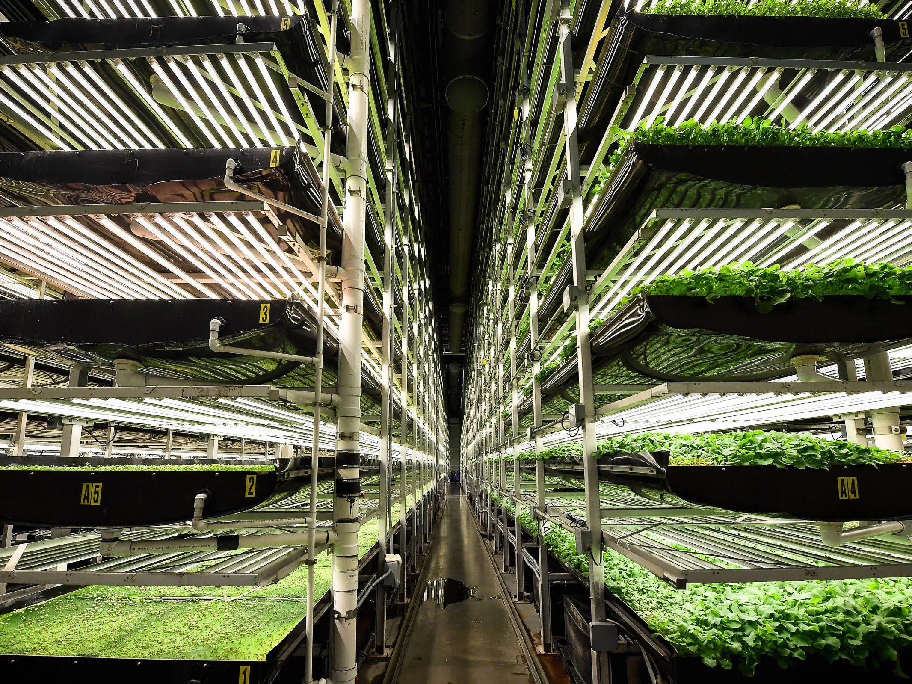
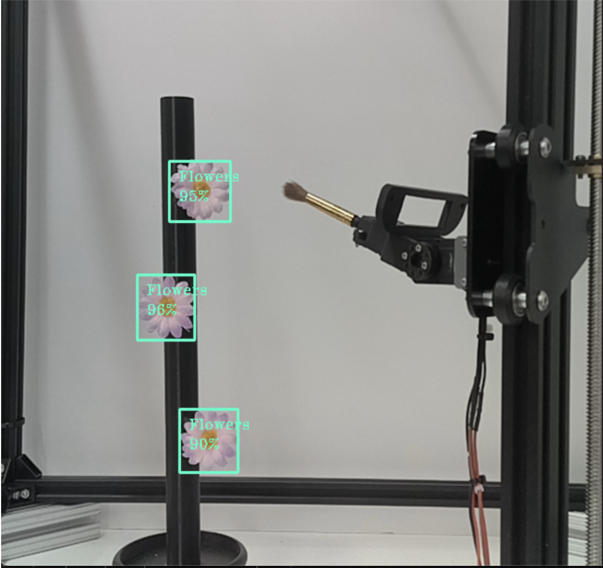
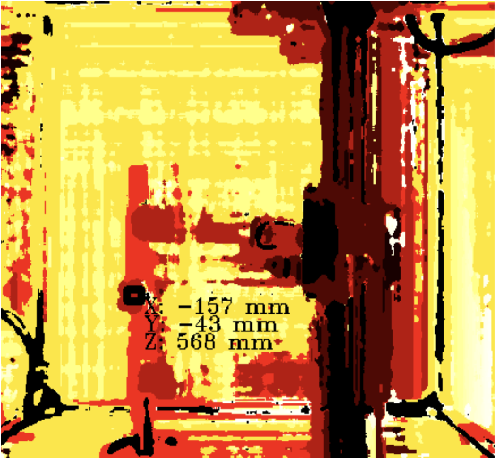
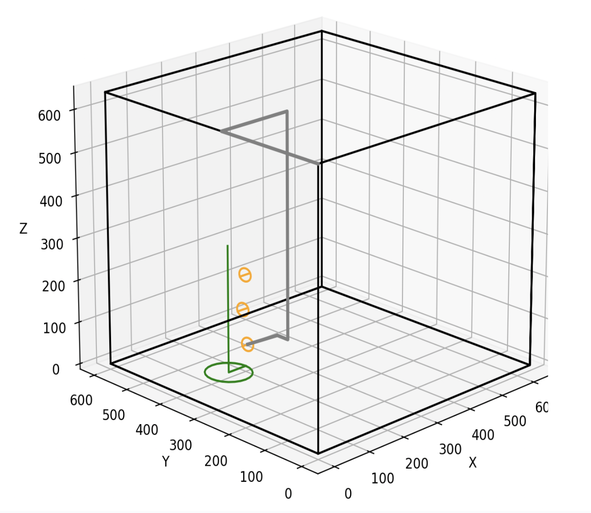
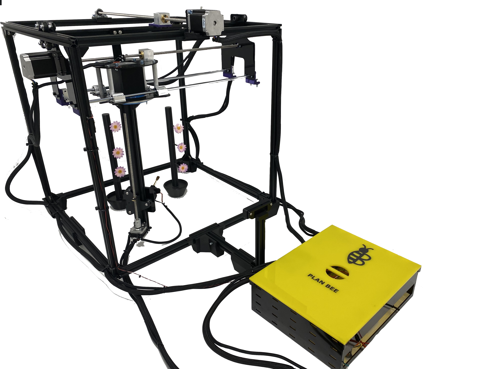
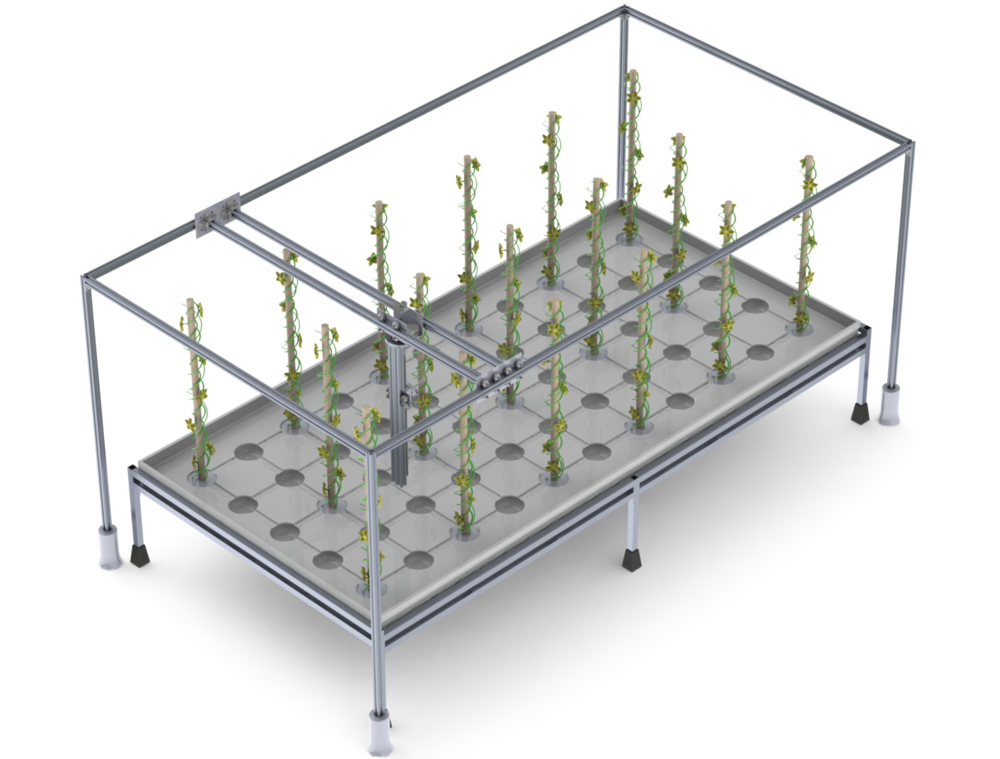
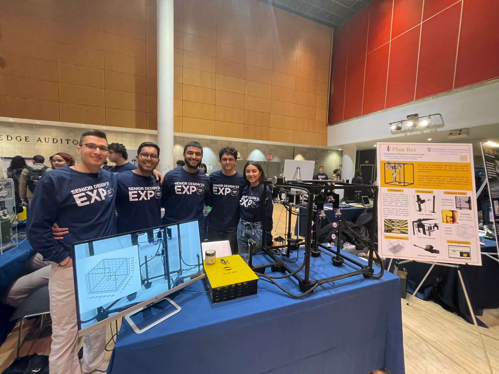

Plan Bee
An agricultural robot intended to increase the diversity of crop production in vertical farms by enabling pollination in enclosed environments.
Description:
Plan Bee is a five degree of freedom robot with on-board computer vision and a rotating brush end-effector. Plan Bee successfully identifies flowers within its workplace and pollinates them without the need for humans or live bees. It leverages an image segmentation neural network and a depth perception camera to identify flowers, determine their location, and automatically plan and deploy pollen transfer routines.
Awards: 1st Place Winners at Columbia Engineering 2023 Senior Design Expo!
The Problem
Vertical farming presents a sustainable, resource-efficient alternative to conventional agricultural practices, but growing crops in an enclosed environment removes access to natural pollinators such as insects and wind.
Many fruits and vegetables that are staples of our diets require pollination to grow, thus the absence of pollinators limits the variety of crops vertical farming can produce.

Our Solution
Personal Contributions
Software
As the software developer for this project, my responsibilities included:



Electronics & Firmware
I was also in charge of the electronics and firmware for the system, including:
- Embedded firmware for lower-level motor control (Arduino).
- Selecting motors and motor drivers (actuation scheme consisting of a mix of stepper motors and servos).
- Electronics design and wire management.

Hardware
I also contributed to the hardware, including:
- Selecting robot kinematics suited for this task (gantry based, 5 DOF leveraging flowers’ axial symmetry).
- Designing and modelling lead screw actuators.
- Creating CAD for multiple components.
- Manufacturing and assembly.

Our Team
